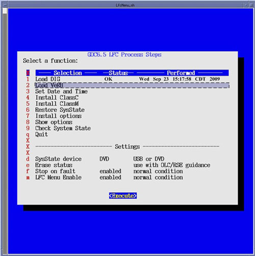
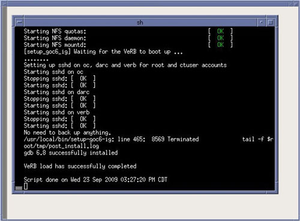

| NOTE: | If the VeRB Computer is not configured in System INFO
file, the LFC Menu will display “Option Not Installed”
in status column. If the console does not have a VeRB Computer, this Menu Selection may be skipped. |
Select [Execute], two shell windows will open and the VeRB software will be loaded.
Upon completion of the VeRB software load, close the two shell windows to return to the LFC Menu.
Illustration 21: LFC Menu - Load VeRB Selection

Illustration 22: Load VeRB Execution
